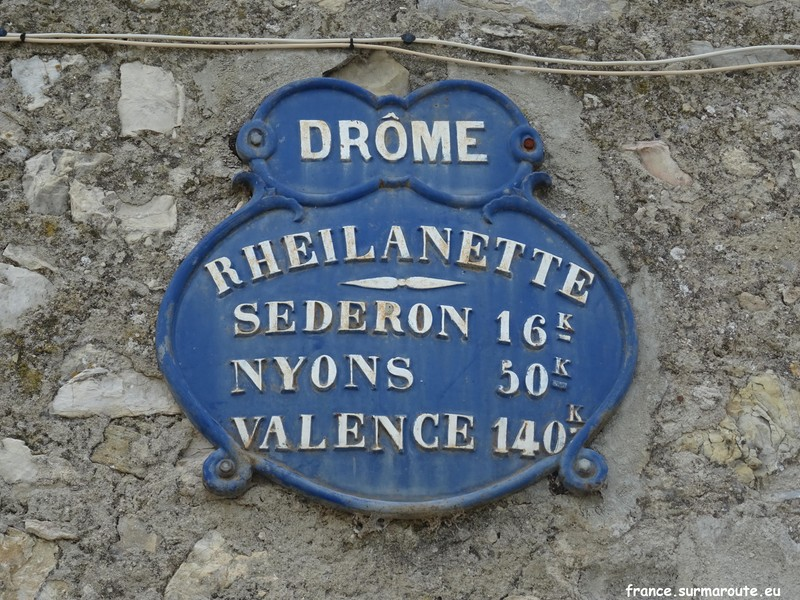
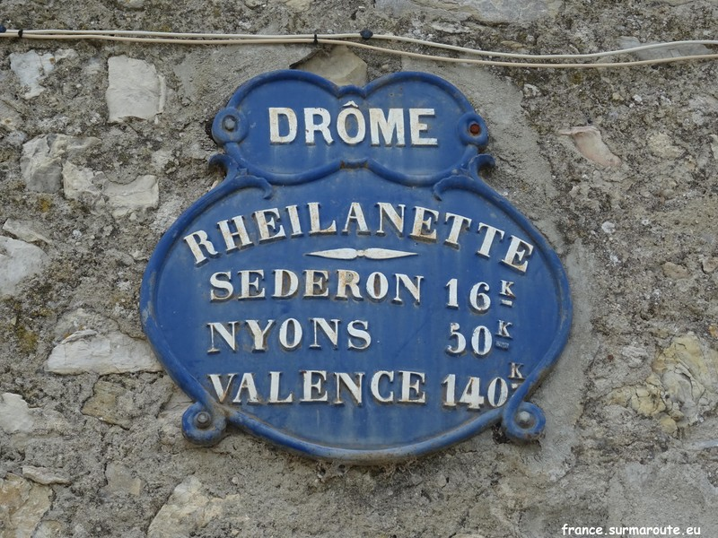

entre Reilhanette et Aurel deux modèles de bornes pour l'ancienne RN 542


entre Reilhanette et Savoillan l'ancienne borne spécifique au Vaucluse et la moderne sur RD 72 et 41

Retour aux panneaux de la Drôme
entre Reilhanette et Aurel deux modèles de bornes pour l'ancienne RN 542
entre Reilhanette et Savoillan l'ancienne borne spécifique au Vaucluse et la moderne sur RD 72 et 41
